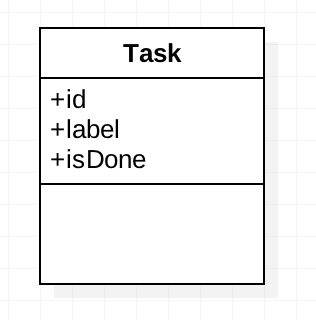
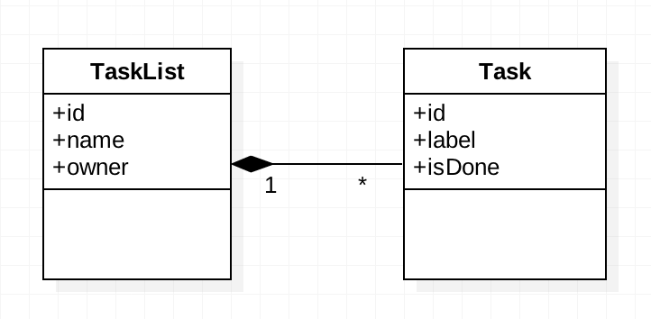

Chapter 4 - Using a database with Flask
Configuring a database, introduction to model classes, querying objects from the database and setting up relationships between model classes.
I- Configuring a database
Object oriented programming and relational database view data in different ways. An ORM (Object Relational Mapping) is a mechanism that makes the link between the object oriented and the relational database approaches. When using an ORM, model classes are defined for, usually, mapping each of the relational tables.
This chapter will cover how to integrate Flask with SQLAlchemy, the most famous python ORM. Before proceeding, install the SQLAlchemy plugin for Flask, by running the following in a Unix terminal:
pip install Flask-SQLAlchemy==2.1
Now, create a database.py script that will contain the database configuration and model classes' definitions:
Now, modify the existing server.py so that it creates the database at startup:
II- Introduction to model classes
In the ORM model, model classes are usually an object oriented equivalent to a relational table. In this section, we will modelize the following class:
To get started with model classes, open the database.py file and add the following definition of a task:
Now, restart the script and modify the code of server.py to make it store data in database instead of using sessions:
And update the templates/form.html template, to take into account the new data modelization of tasks:
III- Querying database objects
It is possible to read, update and delete objects from database directly from a model class. The following piece of code illustrates few examples of database querying using Flask (more details here):
IV- Relationships
It is possible setup links between model classes, by using the relationship concept. In this section, we will modelize the following relationship:
Let's add a new model class in our web application: to do so, apply the following modifications to database.py:
V- Towards a complete task manager
In this section, we will complete the existing application so that it can handle several task list. Please take a look a the modifications we made to the existing code.
server.py:
templates/form.html: